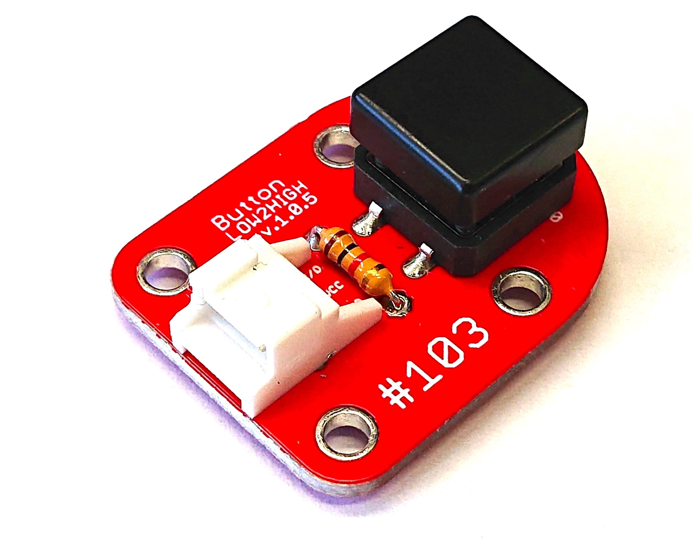

103 Button

注意
＃FaBo 103 button は、抵抗が１Kのものをご使用ください。 茶、黒、赤、金（１０２）

接続
GPIOは4,5,6,12,13,16

FaBo #103 BUTTON Brickを使用してボタンがおしたら、LED点灯させます。 LED BrickをGPIO４に接続、BUTTON Brickは、GPIO5に接続します。
GPIOの判定
以下のコードは、ボタンが押されたのたえずチェックします。
# coding: utf-8
import Jetson.GPIO as GPIO
import sys
LEDPIN = 4
BUTTONPIN = 5
GPIO.setmode(GPIO.BCM)
GPIO.setup(LEDPIN, GPIO.OUT)
GPIO.setup(BUTTONPIN, GPIO.IN)
try:
while True:
# ボタン押下判定
if( GPIO.input(BUTTONPIN)):
# LED点灯
GPIO.output(LEDPIN, True)
else:
# LED消灯
GPIO.output(LEDPIN, False)
except KeyboardInterrupt:
GPIO.cleanup()
sys.exit(0)
GPIOの入力待ち
以下のコードはボタンがおされるまで待っています。
# coding: utf-8
import Jetson.GPIO as GPIO
import sys
LEDPIN = 4
BUTTONPIN = 5
GPIO.setmode(GPIO.BCM)
GPIO.setup(LEDPIN, GPIO.OUT)
GPIO.setup(BUTTONPIN, GPIO.IN)
try:
while True:
GPIO.wait_for_edge(BUTTONPIN, GPIO.FALLING)
print("Button Pressed!")
GPIO.output(LEDPIN, GPIO.HIGH)
time.sleep(1)
GPIO.output(LEDPIN, GPIO.LOW)
except KeyboardInterrupt:
GPIO.cleanup()
sys.exit(0)
イベントとして取得
以下のコードは、処理中にボタンがおされたら、現在の処理を停止して、関数blinkを呼び、その関数の処理がおわったら、blink呼び出し前に戻ります。
# coding: utf-8
import Jetson.GPIO as GPIO
import sys
LEDPIN = 4
BUTTONPIN = 5
GPIO.setmode(GPIO.BCM)
GPIO.setup(LEDPIN, GPIO.OUT)
GPIO.setup(BUTTONPIN, GPIO.IN)
# blink LED
def blink(channel):
for i in range(5):
GPIO.output(LEDPIN, GPIO.HIGH)
time.sleep(0.5)
GPIO.output(LEDPIN, GPIO.LOW)
time.sleep(0.5)
GPIO.add_event_detect(BUTTONPIN, GPIO.FALLING, callback=blink, bouncetime=10)
try:
while True:
print("Loop")
time.sleep(1)
except KeyboardInterrupt:
GPIO.cleanup()
sys.exit(0)